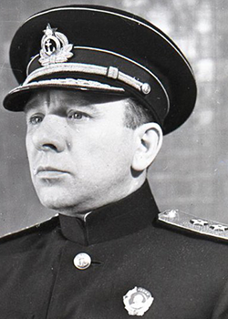

Адмирал
Владимир Филиппович Трибуц
Командующий Краснознаменным Балтийским флотом. В 38 лет возглавил флот — один из самых молодых командующих в истории СССР. Начинал фельдшером на кораблях Волжско-Каспийской флотилии.
Владимир Филиппович Трибуц (1900–1977) родился в Петербурге в семье крестьянина. В 1918 году вступил в Красный флот, служил фельдшером на кораблях Волжско-Каспийской флотилии. Окончил Военно-морское училище имени Фрунзе (1926) и Военно-морскую академию (1932). Командовал эсминцем «Яков Свердлов», с 1938 года — начальник штаба, а с апреля 1939 года — командующий Балтийским флотом. В августе 1941 года организовал и возглавил переход кораблей из Таллина в Кронштадт сквозь минные поля и атаки авиации противника. Участник обороны Ленинграда, прорыва блокады, освобождения Прибалтики. Доктор исторических наук, автор книг «Балтийцы вступают в бой» и «Балтийцы сражаются». Похоронен в Москве.